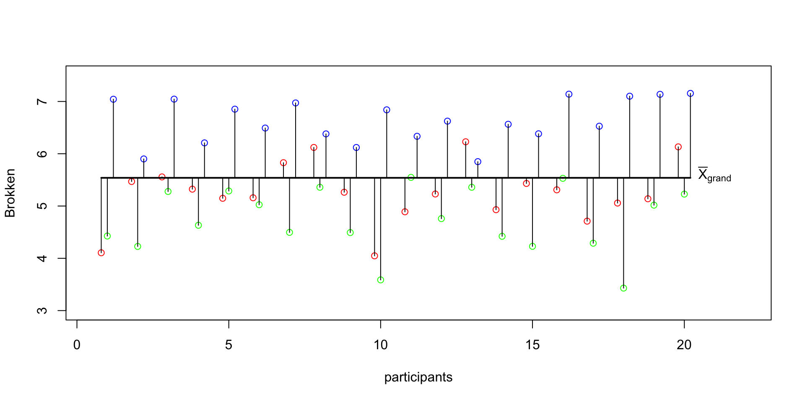
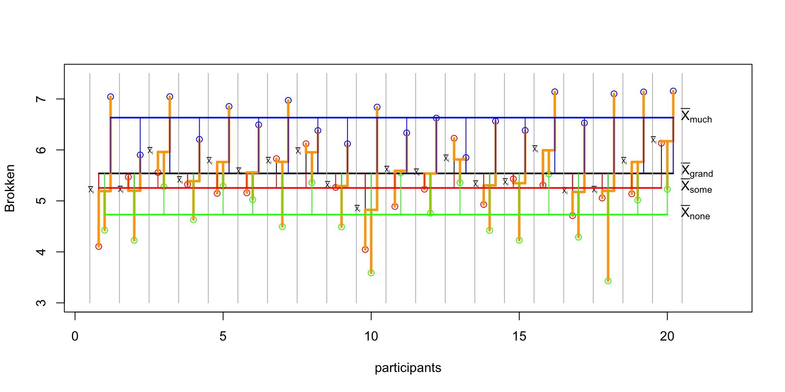
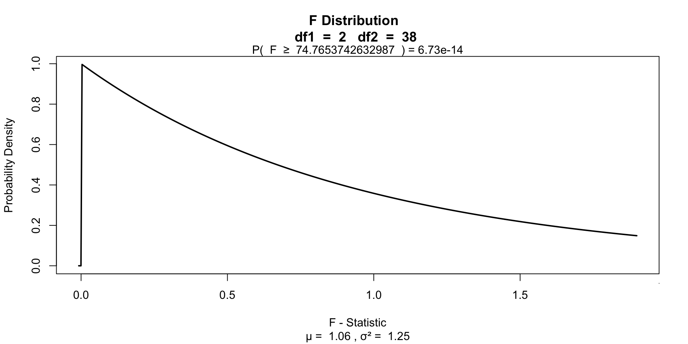

ANOVA
Repeated & Mixed
Klinkenberg
University of Amsterdam
18 oct 2022
ANOVA
One-way repeated
One-way repeated measures ANOVA
The one-way repeated measures ANOVA analyses the variance of the model while reducing the error by the within person variance.
- 1 dependent/outcome variable
- 1 independent/predictor variable
- 2 or more levels
- All with same subjects
Assumptions
- Uni- or Multivariate
- Continuous dependent variable
- Normaly distributed
- Shapiro-Wilk
- Equality of variance within groups
- Mauchly’s test of Sphericity
Uni- or Multi- descision tree

- Field: 15.5.2, Output 15.2
- Field: Output 15.4
- Field: Jane Superbrain 15.2, Output 15.2 GG and HF.
- Field: Jane Superbrain 15.2, Sample size \(n\) is larger than \(a\) (number of levels) + 10
- Field: 15.5.4, Output 15.2
- Field: 15.5.4, Output 15.4
- Field: 15.5.4, Output 15.4
Formulas
| Variance | Sum of Squares | df | Mean Squares | F-ratio |
|---|---|---|---|---|
| Between | \({SS}_{{between}} = {SS}_{{total}} - {SS}_{{within}}\) | \({DF}_{{total}}-{DF}_{{within}}\) | \(\frac{{SS}_{{between}}}{{DF}_{{between}}}\) | |
| Within | \({SS}_{{within}} = \sum{s_i^2(n_i-1)}\) | \((n_i-1)n\) | \(\frac{{SS}_{{within}}}{{DF}_{{within}}}\) | |
| • Model | \({SS}_{{model}} = \sum{n_k(\bar{X}_k-\bar{X})^2}\) | \(k-1\) | \(\frac{{SS}_{{model}}}{{DF}_{{model}}}\) | \(\frac{{MS}_{{model}}}{{MS}_{{error}}}\) |
| • Error | \({SS}_{{error}} = {SS}_{{within}} - {SS}_{{model}}\) | \((n-1)(k-1)\) | \(\frac{{SS}_{{error}}}{{DF}_{{error}}}\) | |
| Total | \({SS}_{{total}} = s_{grand}^2(N-1)\) | \(N-1\) | \(\frac{{SS}_{{total}}}{{DF}_{{total}}}\) |
Where \(n_i\) is the number of observations per person and \(k\) is the number of conditions. These two are equal for a one-way repeated ANOVA. Furthermore \(n\) is the number of subjects per condition and \(N\) is the total number of data points \(n \times k\).
Example
Measure driving ability in a driving simulator. Test in three consecutive conditions where participants come back to attend the next condition.
- Alcohol none
- Alcohol some
- Alcohol much
The data
MS total
\({MS}_{total} = \frac{{SS}_{{total}}}{{DF}_{{total}}} = s_{grand}^2\)
SS total
\({DF_{total}} = N-1\)
\({SS}_{{total}} = s_{grand}^2(N-1)\)
SS total visual

MS within
\({MS}_{within} = \frac{{SS}_{{within}}}{{DF}_{{within}}} \\ {DF}_{within} = (n_i-1)n\)
SS within
\({SS}_{{within}} = \sum{s_i^2(n_i-1)}\)
SS within data
SS within visual

MS between
\({MS}_{between} = \frac{{SS}_{{between}}}{{DF}_{{between}}}\)
\({DF}_{between}-{DF}_{{within}} \\ {SS}_{between} = {SS}_{total} - {SS}_{within}\)
MS model
\({MS}_{model} = \frac{{SS}_{{model}}}{{DF}_{{model}}} \\ {DF}_{model} = k-1\)
SS model
\({SS}_{model} = \sum{n_k(\bar{X}_k-\bar{X})^2}\)
# SS model
n_k1 = length(none_alc)
n_k2 = length(some_alc)
n_k3 = length(much_alc)
# Calculate sums of squares for the model
SS_k1 = n_k1 * (mean(none_alc) - mean(total))^2
SS_k2 = n_k2 * (mean(some_alc) - mean(total))^2
SS_k3 = n_k3 * (mean(much_alc) - mean(total))^2
SS_model = sum(SS_k1, SS_k2, SS_k3)
SS_model[1] 38.63266SS model visual
MS error
\(\frac{{SS}_{error}}{{DF}_{error}}\)
\({DF}_{error} = (n-1)(k-1)\)
SS error
\({SS}_{error} = {SS}_{within} - {SS}_{model}\)
F ratio
\(F = \frac{{MS}_{{model}}}{{MS}_{{error}}}\)
Visualize

Contrast
Planned comparisons
- Exploring differences of theoretical interest
- Higher precision
- Higher power
Post-Hoc
Unplanned comparisons
- Exploring all possible differences
- Adjust T value for inflated type 1 error
Effect size
General effect size measures
- Amount of explained variance \(R^2\) also called eta squared \(\eta^2\).
- Omega squared \(\omega^2\)
Effect sizes of contrasts or post-hoc comparisons
- Cohen’s \(r\) gives the effect size for a specific comparison
- \(r_{Contrast} = \sqrt{\frac{t^2}{t^2+{df}}}\)
- \(r_{Contrast} = \sqrt{\frac{F(1,{df}_R)}{F(1,{df}_R)+{df}_R}}\)
ANOVA factorial repeated
Factorial repeated measures ANOVA
The factorial repeated measures ANOVA analyses the variance of the model while reducing the error by the within person variance.
- 1 dependent/outcome variable
- 2 or more independent/predictor variable
- 2 or more levels
- All with same subjects
Assumptions
Same as one-way repeated measures ANOVA
Example
In this example we will again look at the amount of accidents in a car driving simulator while subjects where given varying doses of speed and alcohol. But this time we lat participants partake in all conditions. Every week subjects returned for a different experimental condition.
- Dependent variable
- Accidents
- Independent variables
- Speed
- None
- Small
- Large
- Alcohol
- None
- Small
- Large
- Speed
| person | 1_1 | 1_2 | 1_3 | 2_1 | 2_2 | 2_3 | 3_1 | 3_2 | 3_3 |
|---|---|---|---|---|---|---|---|---|---|
| 1 | 1 | ||||||||
| 2 | 2 | ||||||||
| 3 | 3 | ||||||||
| 4 | 4 | ||||||||
| 5 | 5 | ||||||||
| 6 | 6 | ||||||||
| 7 | 7 | ||||||||
| 8 | 8 | ||||||||
| 9 | 9 |
Data
Mixed design ANOVA
Mixed design
The mixed ANOVA analyses the variance of the model while reducing the error by the within person variance.
- 1 dependent/outcome variable
- 2 or more independent/predictor variable with different subjects
- 2 or more levels
- 1 or more independent/predictor variable with same subjects
- 2 or more levels
Assumptions
Same as repeated measures ANOVA and same as factorial ANOVA.
Example
- Dependent variable
- Accidents
- Independent variables
- Speed (same subjects)
- None
- Small
- Large
- Alcohol (same subjects)
- None
- Small
- Large
- Gender
- Males
- Females
- Speed (same subjects)
| person | gender | 1_1 | 1_2 | 1_3 | 2_1 | 2_2 | 2_3 | 3_1 | 3_2 | 3_3 |
|---|---|---|---|---|---|---|---|---|---|---|
| 1 | males | 1 | ||||||||
| 2 | males | 2 | ||||||||
| 3 | males | 3 | ||||||||
| 4 | males | 4 | ||||||||
| 5 | males | 5 | ||||||||
| 6 | males | 6 | ||||||||
| 7 | males | 7 | ||||||||
| 8 | males | 8 | ||||||||
| 9 | males | 9 | ||||||||
| 10 | females | 1 | ||||||||
| 12 | females | 2 | ||||||||
| 13 | females | 3 | ||||||||
| 14 | females | 4 | ||||||||
| 15 | females | 5 | ||||||||
| 16 | females | 6 | ||||||||
| 17 | females | 7 | ||||||||
| 18 | females | 8 | ||||||||
| 20 | females | 9 |
Data
End
Contact


Scientific & Statistical Reasoning